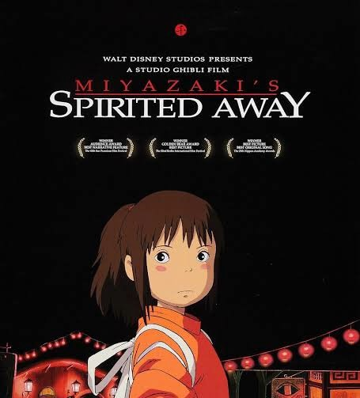
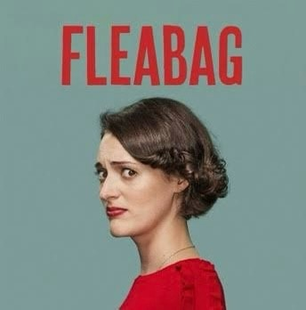

Halsey, Taylor Swift, Fiona Apple, and Lana Del Rey are my favorite artists because their music feels personal and deeply emotional. Halsey blends indie-pop and alternative sounds, writing about identity, love, and mental health with raw honesty. Taylor Swift is a master storyteller, switching between country, pop, and indie-folk while capturing emotions and life experiences in a way that feels relatable. Fiona Apple’s music is poetic and complex, mixing alternative rock and baroque pop with lyrics that explore pain, resilience, and introspection. Lana Del Rey creates dreamy, nostalgic music with indie-pop and alternative rock influences, often singing about love, sadness, and American culture. Each of these artists writes music that feels like a personal diary, making their songs powerful and meaningful. I usually listen to women’s songs because their emotions, struggles, and perspectives resonate with me more. Since I’m more of a lyrics kind of girlie, I always look for songs with deep, poetic, and meaningful words that make me feel something.
I love films and series like Spirited Away, Fleabag, The Great, and House of the Dragon because they all have strong storytelling, unique characters, and emotional depth. Spirited Away is a beautifully animated film with a magical and mysterious world, showing themes of growth, identity, and resilience. Fleabag stands out with its sharp writing, dark humor, and deep exploration of grief, love, and self-destruction. The Great is a clever mix of history and satire, with witty dialogue and bold characters that make it both entertaining and thought-provoking. House of the Dragon is a gripping drama filled with political intrigue, complex relationships, and powerful performances, making it an exciting and intense watch. I love stories that are rich in emotion, layered in meaning, and full of strong, flawed characters who feel real. Whether it’s fantasy, drama, or comedy, I’m drawn to narratives that leave a lasting impact.